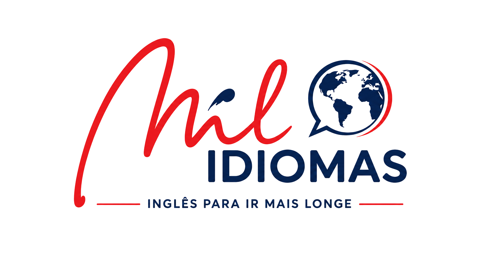
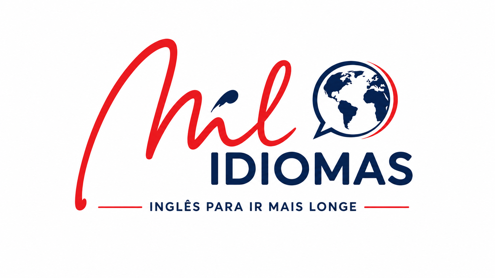

01 / 05Aprenda inglês na velocidade do seu tempo, ouvindo a pronúncia certa desde a primeira aula.
Aqui o inglês vem com um pedaço do mundo junto. Nesse dia, o professor escreveu o nome de cada aluno no alfabeto da língua materna dele. É o tipo de aula que ninguém esquece.
Você conversa com quem cresceu falando inglês e é corrigido na hora.
Imagem, áudio e repetição guiada. A palavra entra sem decoreba.
Ninguém passa despercebido no fundo da sala. Todo mundo fala em toda aula.
Quem atende sabe seu nome, e a matrícula é resolvida olho no olho.
Do primeiro hello à conversa de verdade. É esse trajeto que a gente faz junto com cada turma, do começo ao fim.

Aula experimental sem compromisso. Você senta com a turma, ouve o professor estrangeiro e decide depois.
Chama no WhatsApp